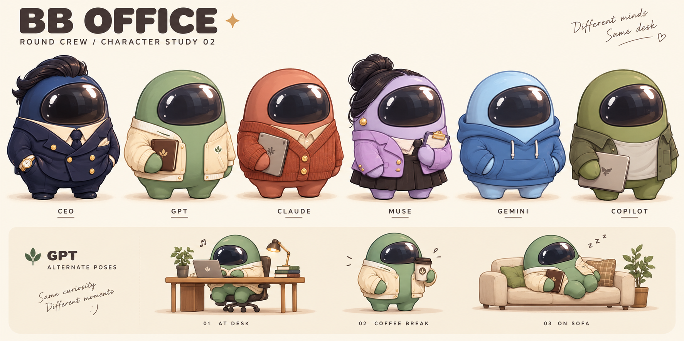

BB Office · 동글 크루 시안
오피스로 돌아가기둥근 몸통과 큰 바이저, 짧은 팔다리. 대표와 직원은 옷과 색으로 구별하는 2D 캐릭터 방향입니다.

캐릭터 디자인 검토용 시안입니다. 오피스에 적용된 캐릭터와는 별개입니다.둥근 몸통과 큰 바이저, 짧은 팔다리. 대표와 직원은 옷과 색으로 구별하는 2D 캐릭터 방향입니다.

캐릭터 디자인 검토용 시안입니다. 오피스에 적용된 캐릭터와는 별개입니다.